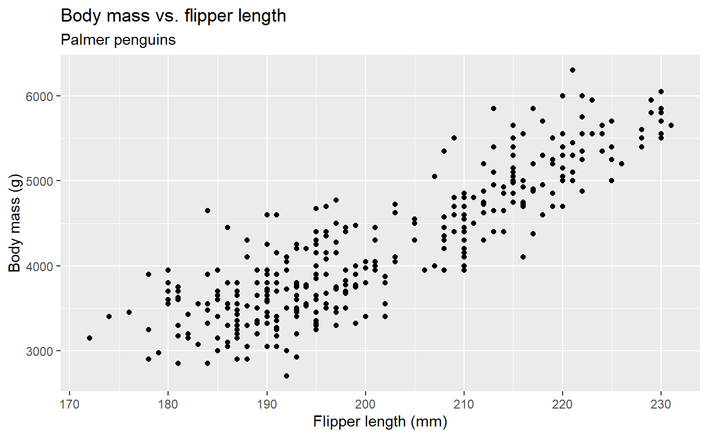
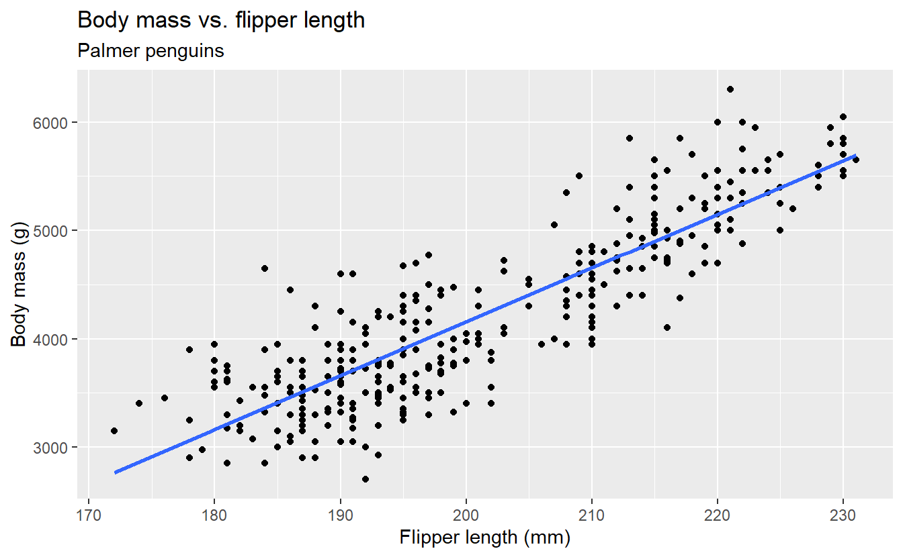
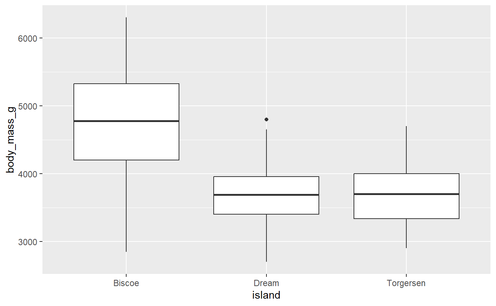

library(tidyverse)
library(tidymodels)
library(palmerpenguins)AE 09: Modeling penguins
Suggested answers
Application exercise
Answers
Important
These are suggested answers. This document should be used as reference only, it’s not designed to be an exhaustive key.
In this application exercise we will be studying penguins. The data can be found in the palmerpenguins package and we will use tidyverse and tidymodels for data exploration and modeling, respectively.
Read the following context and take a glimpse at the data set before we get started.
This data set comprising various measurements of three different penguin species, namely Adelie, Gentoo, and Chinstrap. The rigorous study was conducted in the islands of the Palmer Archipelago, Antarctica. These data were collected from 2007 to 2009 by Dr. Kristen Gorman with the Palmer Station Long Term Ecological Research Program, part of the US Long Term Ecological Research Network. The data set is called
penguins.
glimpse(penguins)Rows: 344
Columns: 8
$ species <fct> Adelie, Adelie, Adelie, Adelie, Adelie, Adelie, Adel…
$ island <fct> Torgersen, Torgersen, Torgersen, Torgersen, Torgerse…
$ bill_length_mm <dbl> 39.1, 39.5, 40.3, NA, 36.7, 39.3, 38.9, 39.2, 34.1, …
$ bill_depth_mm <dbl> 18.7, 17.4, 18.0, NA, 19.3, 20.6, 17.8, 19.6, 18.1, …
$ flipper_length_mm <int> 181, 186, 195, NA, 193, 190, 181, 195, 193, 190, 186…
$ body_mass_g <int> 3750, 3800, 3250, NA, 3450, 3650, 3625, 4675, 3475, …
$ sex <fct> male, female, female, NA, female, male, female, male…
$ year <int> 2007, 2007, 2007, 2007, 2007, 2007, 2007, 2007, 2007…Visualizing the relationship
Our goal is to understand better how various body measurements and attributes of penguins relate to their body mass.
- Create an appropriate plot to investigate the relationship between penguins’ flipper length and body mass. Put the predictor on the x-axis and the outcome on the y-axis. Add appropriate labels.
ggplot(penguins, aes(x = flipper_length_mm, y = body_mass_g)) +
geom_point() +
labs(
x = "Flipper length (mm)",
y = "Body mass (g)",
title = "Body mass vs. flipper length",
subtitle = "Palmer penguins"
)Warning: Removed 2 rows containing missing values or values outside the scale range
(`geom_point()`).
- Describe the form, direction, and strength of the relationship. Note any unusual observations.
The relationship is roughly linear, positive, and strong: penguins with higher flipper lengths tend to have higher body mass. There are no unusual observations.
- Let R draw the regression line. Use
geom_smooth()withmethod = "lm"and setse = FALSE.
ggplot(penguins, aes(x = flipper_length_mm, y = body_mass_g)) +
geom_point() +
geom_smooth(method = "lm", se = FALSE) +
labs(
x = "Flipper length (mm)",
y = "Body mass (g)",
title = "Body mass vs. flipper length",
subtitle = "Palmer penguins"
)
- What types of questions can this plot help answer?
How does penguin body mass tend to change with flipper length? What body mass would we predict for a penguin with a given flipper length?
Model fit and summary
- Fit a linear regression model that predicts body mass from flipper length.
bm_fl_fit <- linear_reg() |>
fit(body_mass_g ~ flipper_length_mm, data = penguins)
bm_fl_fitparsnip model object
Call:
stats::lm(formula = body_mass_g ~ flipper_length_mm, data = data)
Coefficients:
(Intercept) flipper_length_mm
-5780.83 49.69 - Display the model summary and extract the slope and intercept estimates.
tidy(bm_fl_fit)# A tibble: 2 × 5
term estimate std.error statistic p.value
<chr> <dbl> <dbl> <dbl> <dbl>
1 (Intercept) -5781. 306. -18.9 5.59e- 55
2 flipper_length_mm 49.7 1.52 32.7 4.37e-107- Write the fitted model using mathematical notation.
\[ \widehat{body~mass} = -5781 + 49.7 \times flipper~length \]
- Interpret the slope in context.
For each additional millimeter of a penguin’s flipper length, their predicted weight will be higher, on average, by 49.7 grams.
- Interpret the intercept in context. Is this interpretation meaningful for these data?
Penguins with a flipper length of 0 are predicted to weigh -5781 grams. This is the mathematical interpretation, but it is not practically meaningful: penguins cannot have a flipper length of zero, nor a negative mass!
Correlation
- Calculate the correlation between flipper length and body mass. Interpret its sign and magnitude.
penguins |>
summarize(r = cor(flipper_length_mm, body_mass_g, use = "complete.obs"))# A tibble: 1 × 1
r
<dbl>
1 0.871The correlation is approximately 0.871, indicating a strong positive linear relationship.
Predictions and residuals
- Use the model to predict the body mass of a penguin with a flipper length of 210mm.
new_penguin <- tibble(flipper_length_mm = 210)
predict(bm_fl_fit, new_data = new_penguin)# A tibble: 1 × 1
.pred
<dbl>
1 4653.The predicted mass is approximately 4653g.
- If appropriate, use the model to predict the body mass of a penguin with a flipper length of 100mm.
This prediction isn’t appropriate since 100 mm is outside of the range of the data (extrapolation).
- Use
augment()to add predictions and residuals to the penguins data.
penguins_aug <- augment(
bm_fl_fit,
new_data = penguins
)
penguins_aug# A tibble: 344 × 10
.pred .resid species island bill_length_mm bill_depth_mm flipper_length_mm
<dbl> <dbl> <fct> <fct> <dbl> <dbl> <int>
1 3212. 538. Adelie Torgers… 39.1 18.7 181
2 3461. 339. Adelie Torgers… 39.5 17.4 186
3 3908. -658. Adelie Torgers… 40.3 18 195
4 NA NA Adelie Torgers… NA NA NA
5 3808. -358. Adelie Torgers… 36.7 19.3 193
6 3659. -9.43 Adelie Torgers… 39.3 20.6 190
7 3212. 413. Adelie Torgers… 38.9 17.8 181
8 3908. 767. Adelie Torgers… 39.2 19.6 195
9 3808. -333. Adelie Torgers… 34.1 18.1 193
10 3659. 591. Adelie Torgers… 42 20.2 190
# ℹ 334 more rows
# ℹ 3 more variables: body_mass_g <int>, sex <fct>, year <int>Linear regression with a categorical predictor
- A different researcher wants to look at body weight of penguins based on the island they were recorded on. How are the variables involved in this analysis different?
Predictor is categorical.
- Make an appropriate visualization to investigate this relationship below. Additionally, calculate the mean body mass by island.
ggplot(penguins, aes(x = island, y = body_mass_g)) +
geom_boxplot()Warning: Removed 2 rows containing non-finite outside the scale range
(`stat_boxplot()`).
penguins |>
group_by(island) |>
summarize(mean_bm = mean(body_mass_g, na.rm = TRUE))# A tibble: 3 × 2
island mean_bm
<fct> <dbl>
1 Biscoe 4716.
2 Dream 3713.
3 Torgersen 3706.- Fit the linear regression model and display the results. Write the model below.
bm_island_fit <- linear_reg() |>
fit(body_mass_g ~ island, data = penguins)
tidy(bm_island_fit)# A tibble: 3 × 5
term estimate std.error statistic p.value
<chr> <dbl> <dbl> <dbl> <dbl>
1 (Intercept) 4716. 48.5 97.3 8.93e-250
2 islandDream -1003. 74.2 -13.5 1.42e- 33
3 islandTorgersen -1010. 100. -10.1 4.66e- 21\[\widehat{bodymass} = 4716 - 1003*islandDream -1010*islandTorgersen\]
Interpret each coefficient in the context of the problem.
Intercept: The model predicts penguins from Biscoe to weigh 4716 grams.
Slopes:
The model predicts penguins from Dream island to weigh, on average, 1003 grams less than those from Biscoe island.
The model predicts penguins from Torgersen island to weigh, on average, 1010 grams less than those from Biscoe island.
What is the estimated body weight of a penguin on Biscoe island? What are the estimated body weights of penguins on Dream and Torgersen islands?
three_penguins <- tibble(
island = c("Biscoe", "Dream", "Torgersen")
)
bm_island_fit |>
predict(new_data = three_penguins)# A tibble: 3 × 1
.pred
<dbl>
1 4716.
2 3713.
3 3706.Penguins on Biscoe island are estimated to weigh 4716 grams.
Penguins on Dream Island are estimated to weigh 3713 grams.
Penguins on Torgersen Island are estimated to weigh 3706 grams.